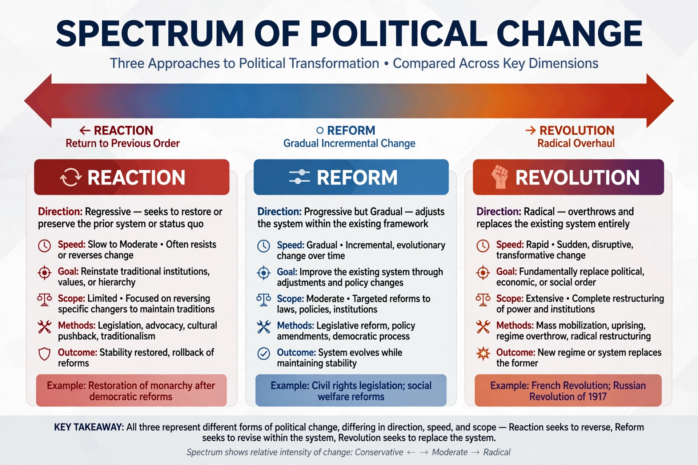

Reform is the improvement or amendment of what is wrong, corrupt, or unsatisfactory in a political system, institution, or practice, achieved through legal and institutional means. It is generally distinguished from revolution, which seeks the wholesale replacement of a system, and from reaction, which seeks a return to an earlier order.
Reformism — the belief that gradual change within existing institutions can produce fundamental improvements — has been a central strand of democratic politics, notably within social democracy, where Eduard Bernstein argued against revolutionary Marxism in favour of evolutionary change. Reform movements typically identify a specific grievance — corrupt elections, unsafe products, restricted suffrage — and mobilise public opinion and legislation behind a remedy.
Notable reform movements include the British Reform Acts of the 19th century, which expanded the franchise; the American Progressive Era reforms of the early 20th century; land, electoral, and civil-service reforms in many countries; and late-20th-century economic reforms that introduced market mechanisms in planned economies, such as China's reform and opening up.
Because reform works within existing structures, it attracts criticism from two directions: revolutionaries argue it legitimises and stabilises unjust systems while delivering too little, while conservatives argue that particular reforms are unnecessary or harmful. Defenders of reformism respond that incremental change is more durable and less violent, and that reforms can accumulate into transformation over time.
See also: Reformism · Revolution · Incrementalism